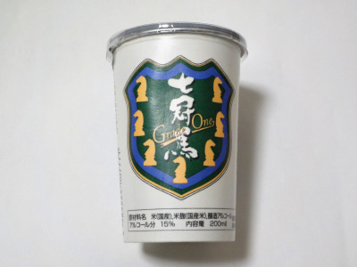

更新日 : 2024/01/14
ちょっと値段が高いワンカップです。

口にお酒を含んだ時に、いい味と香りが広がりました。
ちょっと安いお酒だと刺すようなアルコール感がありますが、これはそうゆうのがなくマイルドでした。
モノの値段には意味があるんだなと思いました。
安くて旨い、高くても不味いモノもありますが、自分で試してみないと好みに合うか分からないです。色々試して好きな味を探したいです。
2017/11/08 とっても美味しい。
2018/07/22 私には丁度いい濃さと甘さでした。
2024/01/14 こんなシンプルな味だったかな？少しだけフルーティーな感じがして飲みやすい日本酒でした。
【おいしいものを食べよう。】【たくさん寝よう。】
【ソロ活をしよう!】【季節感のあることをしよう。】【動画視聴はほどほどに。】【当サイトの全てのコンテンツは無断転載禁止です。】